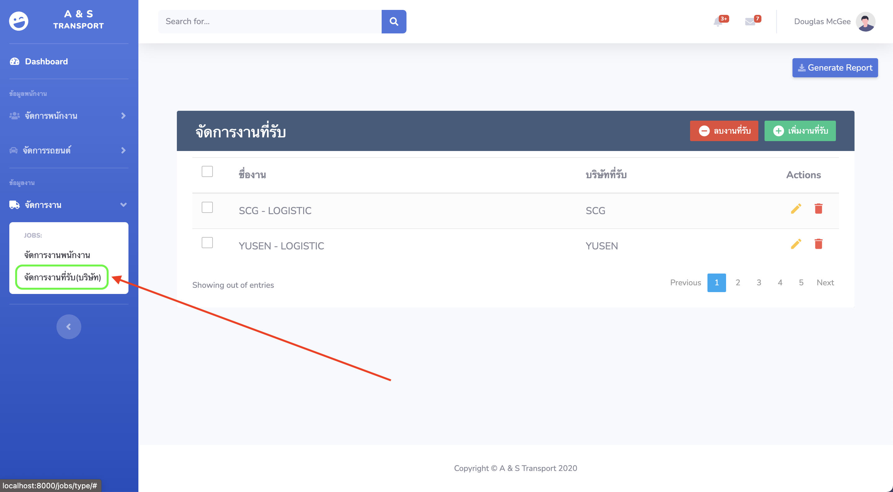

เมนูจัดการงานในบริษัท¶
1.การเข้าเมนูจัดการงานในบริษัท¶
เมนูการจัดการงานในบริษัทแบ่งออกเป็น 2 เมนู ดังนี้
เมนูจัดการข้อมูลงานที่รับเช่น รับงานจาก SCG, etc..

เมนูจัดข้อมูลงานของพนักงาน
2.การนำเข้าข้อมูลงานในบริษัท¶
การนำเข้าข้อมูลงานในบริษัทให้เริ่มนำเข้าข้อมูลตามลำดับดังนี้
[1] งานที่รับมาจากบริษัท เช่น รับงานจาก SCG, etc..

กรอกข้อมูลงานที่รับมาจากบริษัทใช้ในการเก็บประวัติของงานที่ทำ
[2] ข้อมูลงานของพนักงาน

กรอกข้อมูลงานของพนักงานที่ทำในแต่ละรอบ โดยในการกรอกข้อมูลจะมีตัวอย่างรายละเอียดการกรอกงานเพิ่มเติมดังนี้

การกรอกข้อมูลงานเพิ่มเติมให้กรอกในกรอบสีเขียวให้ครบถ้วนจากให้ให้กดเครื่องหมาย “+” เพื่อเพิ่มงานเพิ่มเติม (เช่น ค่าแพ๊คกล่อง, ค่าเด็กนั่งรถ)
หลังจากบันทึกข้อมูลงานของพนักงานจะเห็นว่ามีข้อมูงงวดงานและยอดเงินในรอบปรากฏขึ้นมีรายละเอียดดังนี้
งวดงาน
งวดที่ 1 วันที่ 26 - 10 ของเดือน
งวดที่ 2 วันที่ 11 - 25 ของเดือน
ยอดเงินในรอบ ประกอบด้วย
ค่ารอบของรถที่ออก (จากหัวข้อประเภทรถ เช่น รถ 4 ล้อ )
ค่างานเพิ่มเติมในแต่บละรอบ (เช่น ค่าแพ๊คกล่อง, ค่าเด็กนั่งรถ)